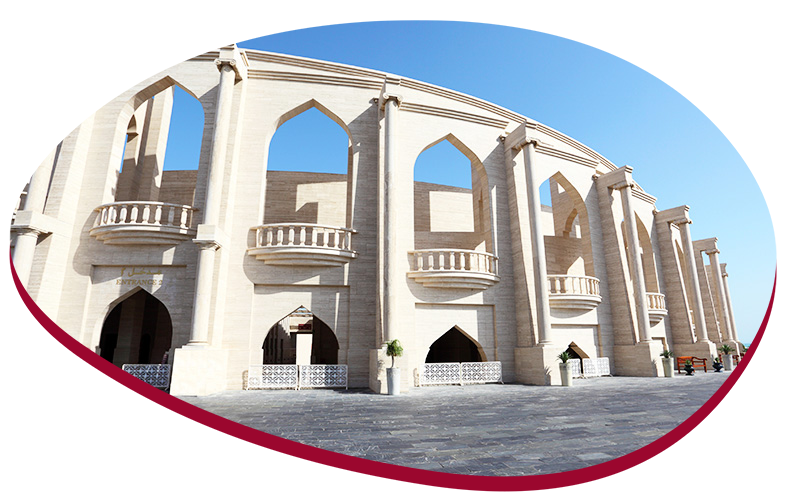

Catar
Mais informações sobre o país
O país sede da Copa do Mundo de 2022 é considerado com uma das nações mais ricas do mundo e é considerada uma potência econômica mundial. Isso se deve ao fato do país ser um grande exportador de petróleo que passou a ser explorado na década de 50.Hoje, Catar é cada vez mais procurado como destino para pontos turístico devido à beleza exótica das cidades do país.
Como a Copa do Mundo está cada vez mais próxima, é necessário que os brasileiros que pretendem visitar o país saibam de algumas informações, entre ela está o fato de que é proibido o consumo de álcool nas ruas! Isso mesmo!
- Segundo a Lei do país, é somente permitido o consumo de bebidas alcoólicas em locais privados
- O uso de roupas ocidentais é até permitido, mas tomando os devidos cuidados para que tais roupas não sejam muito curtas e mostrem demais o corpo
- Para ingressar no país você não precisa de visto por até 30 dias dentro do país. As exigências para entrar são mínimas: a validade do seu passaporte precisa de no mínimo 6 meses, ter pelo menos 2 páginas em branco, apresentar as passagens de ia de volta e seguro de viagem.
